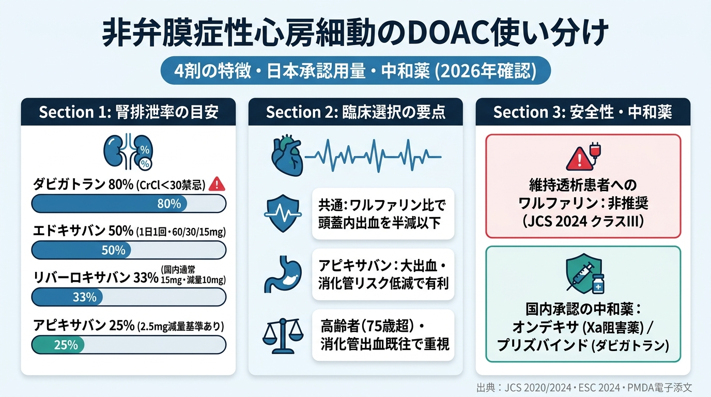

<!doctype html><html lang="ja"><meta charset="utf-8"><meta name="viewport" content="width=device-width,initial-scale=1"><title>非弁膜症性心房細動におけるDOAC使い分け：最新エビデンス：図の拡大</title><style>body{font-family:Meiryo,sans-serif;margin:0;padding:16px;line-height:1.7;color:#17374c}main{max-width:1100px;margin:auto}img{max-width:100%;height:auto}a{color:#195b87}h1{font-size:1.35em}</style><main><h1>非弁膜症性心房細動におけるDOAC使い分け：最新エビデンス</h1><p>画像をクリック／タップすると原寸で開きます。</p><a href="infographic.png" target="_blank" rel="noopener noreferrer" title="画像を原寸で開く"></a><p><a href="https://blog.ichisouzo-lab.com/entry/2025/05/08/122723">記事に戻る</a></p><p>参考資料：<a href="https://www.j-circ.or.jp/cms/wp-content/uploads/2020/01/JCS2020_Ono.pdf">JCS 2020</a> ／ <a href="https://www.j-circ.or.jp/cms/wp-content/uploads/2024/03/JCS2024_Iwasaki.pdf">JCS 2024</a> ／ <a href="https://pubmed.ncbi.nlm.nih.gov/39210723/">ESC 2024</a></p></main></html>